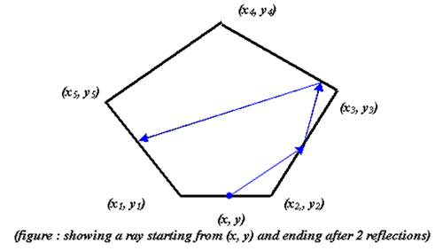

| Ray Inside a Polygon |
Suppose we have a convex polygon of n vertices. One of the edges have a light emitting point which emits a ray of light in a known direction. The edges of the polygon are made of mirrors. As a result when a ray falls upon an edge, it is reflected to another directon according to the laws of reflection. So after a certain number of reflections we can evaluate the point hitted by the ray. Our challenge here is to evaluate that point. By the way, if the ray falls upon a vertex of the polygon, it is lost forever.

The figure may not show the angles properly. But in actual cases, I mean in your program, you should follow the rules of reflection.
The input session begins with two numbers 3 <= v <= 10, 0 <= n <= 1000, denoting the number of vertices in the polygon and the number of reflections to simulate. After that a line will follow containing (x, y), the position of the light emitting point, which will always lie upon an edge(and will never coincide with any vertex) and 0 <= t < 360, the angle in degree between x-axis and the ray, measured in anti-clockwise direction, which is always valid. Next there will be v lines each of which will contain a vertex of the polygon ordered to the anti-clockwise direction. All points will be represented in x, y coordinate system with two digits after the decimal point. A pair of zeros declares the end of the input session.
For every dataset, output the final point the ray hits after n reflections with two digits after the decimal point. Remember, the point should lie upon an edge of the polygon. If the ray is lost forever within n reflections, output ``lost forever...". Output for every dataset should start in a new line. Be extra cautious about precision errors. Because if there is a vertex 4.00 and our ray passes through 4.001, we will count it as ``lost forever...", as we are concerned with only two digits after the decimal point.
4 4 2.00 0.00 0.00 0.00 0.00 4.00 0.00 4.00 4.00 0.00 4.00 4 0 2.00 0.00 45.00 0.00 0.00 4.00 0.00 4.00 4.00 0.00 4.00 0 0
lost forever... 4.00 2.00